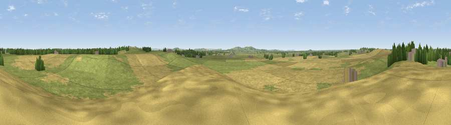

Viewpoint near Edgcott
#34415 in England · top 66% of its area beats it · near EdgcottThe view, rendered

A 360° render of this exact spot computed from the terrain model, tree cover and land cover — summer colours, afternoon light, calibrated against photographs of famous viewpoints. Real trees, hedges and buildings will differ in detail.
The panorama
Grey silhouette: terrain skyline in each direction (720 bearings, Earth curvature and refraction included). Dashed green: skyline with trees (+15 m) and buildings (+8 m) as obstacles. Blue strip: how far the ground is visible on each bearing.
Where the view opens
Wedge length = distance to the farthest visible ground on that bearing (vegetation-aware). Rings at 10, 25 and 50 km.
What fills the view
52% grassland · 43% cropland · 3% woodland · 1% built-up
Angular shares of the visible panorama (visual magnitude), not map area. Landscape diversity 0.38 (0–1 Shannon).
Key numbers
More beautiful places nearby
The staircase of upgrades: each row has a higher view potential than everything closer. Driving times are estimates from straight-line distance, calibrated against real road routing — check an actual route before setting out.
| Place | Direction | Drive | Score |
|---|---|---|---|
| Viewpoint near Calvert Green | ESE · 2 km | ~5 min | 53.3 |
| Viewpoint near Quainton | ESE · 8 km | ~16 min | 56.0 |
| Viewpoint near Quainton | ESE · 8 km | ~16 min | 64.9 |
| Muswell Hill | SSW · 9 km | ~18 min | 67.9 |
| Beacon Hill | SE · 24 km | ~39 min | 72.7 |
| Coombe Hill Monument | SE · 25 km | ~40 min | 75.5 |
| Viewpoint near Woolstone | SW · 53 km | ~74 min | 76.7 |
| Viewpoint near Meon Vale | WNW · 54 km | ~76 min | 77.0 |
51.90891, -1.02417 · source: screening · position refined by local search. Computed location — check access rights before visiting.